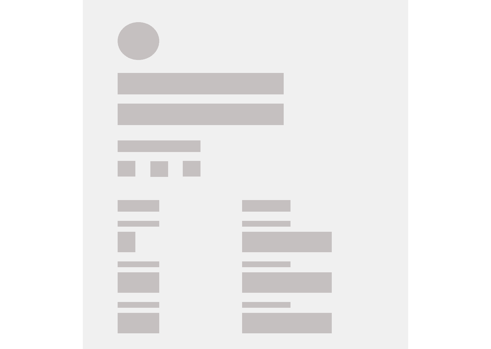
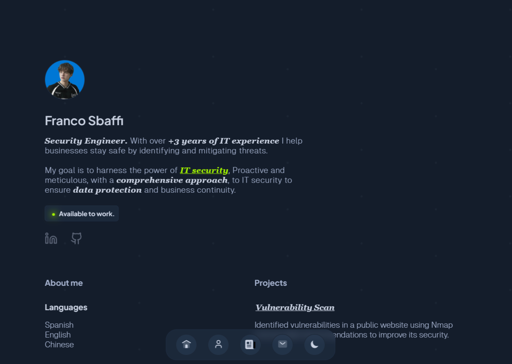

January 1, 2024
PORTFOLIO TRANSFORMATION: A DIVE-IN
WRITTEN BY FRANCO, SECURITY ENGINEER.
Let me walk you through the redesign process of my portfolio, starting from the inspiration, defining the color palette, creating the logo and fonts, and culminating in the coding phase, where I'll compare it with my old portfolio.
QUICK NAVIGATION
PART: I
FINDING INSPO
To embark on a meaningful and inspiring search, I first clearly defined the tone and style I wanted for my
website, opting for a minimalistic and modern approach.
Then, I delved into finding inspiration. This involved creating a mood board for my website. Wondering what a
mood board is? Essentially, it's a visual collage of favorite inspirations.
So, I spent about an hour or two compiling my favorite website elements, sections, and designs from awards
that truly resonated with me. I then consolidated them into my mood board, and here's the final result.
Once this stage is complete and I've absorbed all the inspiring elements, I'm equipped with the solid groundwork to leap into the next phase.
PART: II
COLORS & TYPE
Crafting a website's design hinges on a crucial step - the perfect color palette. For my minimalistic,
contemporary vision, I carefully curated a monochromatic and neutral spectrum: deep charcoal black, pristine
white, slate gray, and soft muted silver. This deliberate choice emanates simplicity, minimalism, and a sleek,
modern vibe.
To infuse my essence into the color scheme, I drew inspiration from my personal style. These handpicked colors
now embody my identity and the desired ambiance flawlessly. With my palette curated, I delved into the realm
of typefaces.
Enter Plus Jakarta Sans - a bold, minimalistic font that commands attention for my headings and display text in pristine white. Its sleek lines exude modernity. Complementing this, Geist Mono, a sophisticated typeface, became the perfect match for body text in deep charcoal black. Its clean, elegant appearance ties the content together seamlessly. As a supplementary option for specific contexts, Georgia, with its timeless and classic appeal, offers an additional layer of versatility.
If you're interested in utilizing any of these fonts, I've included the links below for your access, "Plus Jakarta Sans", "Geist", "Georgia".
PART: III
LOGO & ASSETS
Choosing my very first logo, something that will accompany me for the long haul, was quite the experience. I
came across a striking collection of 267+ SVGs on Figma by 'JP' some time ago, and one design really resonated
with me. I customized it by altering the colors and tweaking the shape just a bit to create my own logo.
I'm sharing this collection with you so you can explore it firsthand. Check it out here.
Ready to embark on the next phase! With the logo firmly established, the stage is set to craft the website. This is the pivotal moment where ideas transform into reality, mirroring the initial vision that ignited our design process in Figma.
PART: IV
WEBSITE DESIGN
Leveling up my portfolio was a turning point, but this time, I approached it with a fresh perspective. While
keeping the essence intact, I revamped it from the ground up, repurposing select elements from the old
portfolio into a sleek, reimagined design.
My previous portfolio sported a vibrant design, laden with colors and gradients. However, the menu left me
underwhelmed. Yet, I found solace in experimenting with blur effects—albeit more subtly compared to my
previous website. I identified elements worth retaining, but truthfully, there weren't many that made the cut.
Before diving into the wireframing process, I brainstormed a list of must-haves for portfolios. Understanding
that visitors don't have endless time to spare, I aimed to present myself swiftly and succinctly—a quick and
straightforward glimpse into who I am and what I offer.
Generally, people tend to shy away from extensive text on websites, preferring a more concise experience.
However, if someone willingly clicks on content expecting substantial text (such as this post), it's a
different story. Before laying out the primary sketch, I crafted a list which I've shared below. It might just
come in handy for you too!
Essential things and tips:
Explore Figma to ignite your UX/UI creativity and craft something truly distinct for yourself. Curate a
compelling color palette that resonates with your brand's identity. Prioritize responsiveness; in a
mobile-dominated world, a non-responsive website loses its impact. Ensure seamless functionality across
devices. Remember, your name, key skills, contact details (email), and a downloadable CV (PDF) are essentials
that should always find a place in your portfolio and of course your work experience.
Consider these optional additions that can enhance your portfolio:
Consider incorporating a light and dark mode feature for your design if it aligns with your vision. Feel
free to include personal hobbies, a blog section to share ideas and experiences, details about the
technologies you're learning, and don't forget to emphasize showcasing your GitHub or LinkedIn profiles.
Lastly, here are things I suggest avoiding or deem unnecessary to include in your portfolio:
Avoid integrating unrelated social networks into your portfolio. For instance, if your Twitter isn’t professionally aligned, skip adding it. Steer clear of excessive text unless it's for a blog; the main objective is to summarize information on your page. Exclude irrelevant details that don't contribute to your professional profile.
Now that you've sorted out the essential information, it's time to assemble the blueprint of your portfolio. How do you begin? My suggestion is to head to Figma, create a blank frame, and start arranging boxes within it. Label these boxes with the names of the information you wish to include.

This initial sketch defined the layout where I envisioned everything. My recommendation is to begin by determining the layout, then substitute the boxes with text, incorporate images if you have, and simultaneously create a similar sketch tailored for mobile view.
After finalizing these elements, this is where I recommend applying the defined color palettes and integrating your chosen fonts into the design.

For my project, I replicated the same layout but with a white theme. Simply invert the colors to achieve this variation.
PART: V
CRAFTING
Now, transitioning to the development phase, I opted for simplicity, using HTML, CSS, and Javascript for the development process.
Creating the portfolio during the development phase was relatively smooth. It took me just three days to finalize and complete my website entirely.
Once completed, the next step is as simple as publishing it on GitHub, and voilà, the job is done!